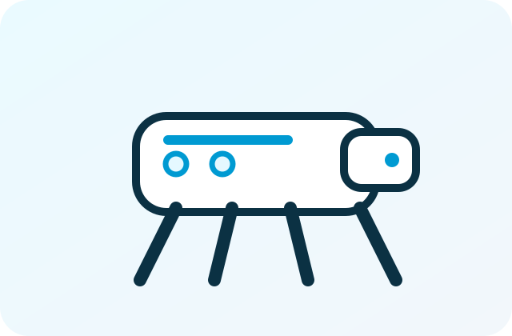

UNITREE / QUADRUPED
Unitree Go2 EDU
巡回・点検、移動制御、ナビゲーション、AI開発を始めやすい研究・教育向け四足ロボット。

SUITABLE USES
適した研究・用途。
巡回・点検
屋内外巡回、カメラ・LiDAR等の搭載、遠隔確認、自律移動の検討。
移動・歩容研究
四足歩行、姿勢制御、段差、経路計画、ナビゲーション研究。
教育・実習
SDK、ROS、センサー、制御、AI開発の導入教材。
企業PoC
路面、段差、通信、稼働時間、遠隔介入率を含めて評価。
CHECK POINTS
正式見積前の確認項目。
| 製品構成 | EDU構成、搭載コンピュータ、センサー、バッテリー、充電器を確認。 |
|---|---|
| 価格 | 本体、オプション、センサー、輸送、設定、PoC費用を分けて提示。 |
| 納期 | 在庫、構成、輸送、日本向け条件により確認。 |
| SDK・ROS | 対象構成、ROS / ROS2、OS、Driver、通信方式を確認。 |
| 現場条件 | 屋内外、段差、路面、通路幅、通信、稼働時間、防塵・防水要件を確認。 |
| 保守 | 一次切り分け、メーカー問い合わせ、部品・修理受付範囲を確認。 |
| 最終確認日 | 2026年7月16日。仕様と公開環境は正式見積時に再確認。 |
RELATED INFORMATION
関連する支援・資料。
実際の走破性・自律性は、路面、段差、搭載重量、センサー、通信、ソフトウェア構成によって変わります。デモ映像だけで導入可否を判断しません。